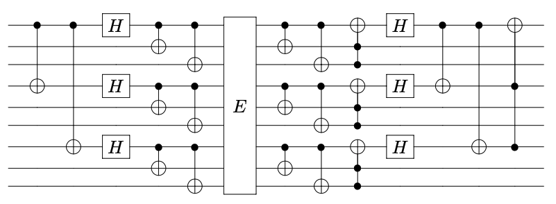

Shor's 9 qubit code
The well-known Shor's 9 qubit code can correct any single Pauli error, but it can also correct some other kinds of errors. Its circuit is shown as below  which can be constructed by the following code
using Yao
using SymEngine
shor(E) = chain(9,
# encode circuit
cnot(1, 4), cnot(1, 7),
put(1=>H), put(4=>H), put(7=>H),
cnot(1,2), cnot(1,3), cnot(4,5), cnot(4,6), cnot(7,8), cnot(7,9),
E, # the error
# decode circuit
cnot(1,2), cnot(1,3), cnot((2, 3), 1),
cnot(4,5), cnot(4,6), cnot((5, 6), 4),
cnot(7,8), cnot(7,9), cnot((8, 9), 7),
put(1=>H), put(4=>H), put(7=>H), cnot(1, 4), cnot(1, 7), cnot((4, 7), 1)
)shor (generic function with 1 method)Now we can check whether it can correct a given error by doing symbolic computation on an arbitrary 1-qubit pure quantum state $α|0⟩ + β|1⟩$ and a specific weight-9 error.
@vars α β
s = α * ket"0" + β * ket"1" |> append_qudits!(8)
E = kron(1=>X, 2=>Z, 3=>Z, 4=>X, 5=>Z, 6=>Z, 7=>X, 8=>Z, 9=>Z);
s |> shor(E) |> expandα|110110110⟩ + β|110110111⟩This page was generated using Literate.jl.